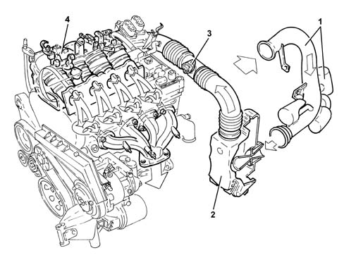
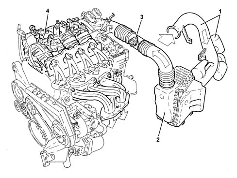
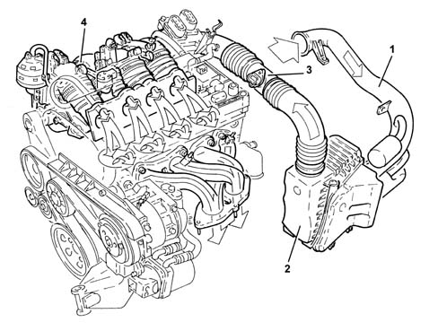

1048A vacuum air circuit
- Path
- Descriptions > 10 ENGINE > 1048 ENGINE AIR SUPPLY CIRCUIT > 1048A vacuum air circuit
- Kind
- system description
- Applies to
- engines: 1.6 TS, 2.0 TS; all production periods
- Interactive page
- https://sloeber94.github.io/elrnDB-a147/en/#/3022418
Applies to: engines: 1.6 TS; all production periods; only with equipment: 103 CV
OPERATION
On this version the air filter casing contains a Venturi which has the function of speeding up the air flow in order to ensure optimum cylinder filling (volumetric efficiency).

1- Cold air intake with resonators 2 - Complete air filter 3 - Air flow meter Characteristic of working principle1056 PETROL INJECTION SYSTEM 4 - Intake manifold Characteristic of working principle1072 INLET AND EXHAUST MANIFOLDS
Applies to: engines: 1.6 TS; all production periods; only with equipment: 120 CV
OPERATION
On this version the air filter casing contains a Venturi which has the function of speeding up the flow of air in order to ensure optimum filling of the cylinders (volumetric efficiency).

1- Cold air intake with resonator 2 - Complete air filter 3 - Air flow meter Characteristic of working principle1056 PETROL INJECTION SYSTEM 4 - Intake manifold Characteristic of working principle1072 INLET AND EXHAUST MANIFOLDS
Applies to: engines: 2.0 TS; all production periods
OPERATION
On this version the air filter casing contains a Venturi which has the function of speeding up the flow of air in order to ensure optimum filling of the cylinders (volumetric efficiency).

1- Cold air intake with resonator 2 - Complete air filter 3 - Air flow meter Characteristic of working principle1056 PETROL INJECTION SYSTEM 4 - Intake manifold Characteristic of working principle1072 INLET AND EXHAUST MANIFOLDS